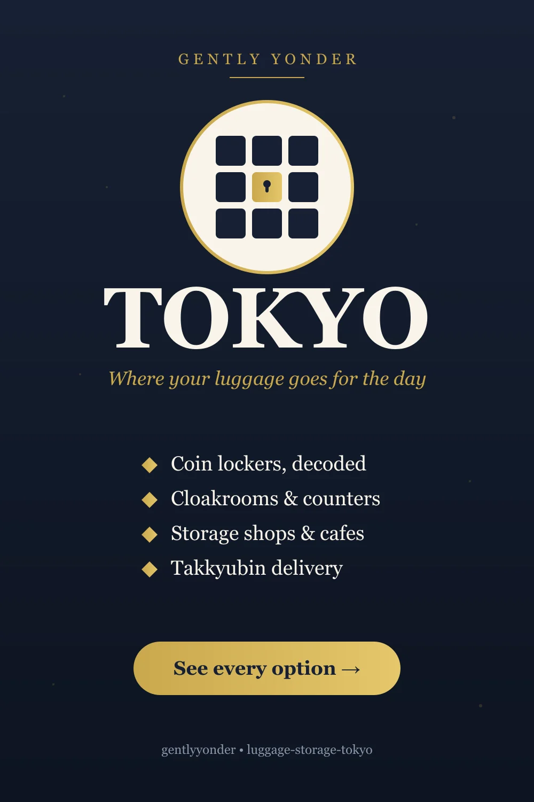
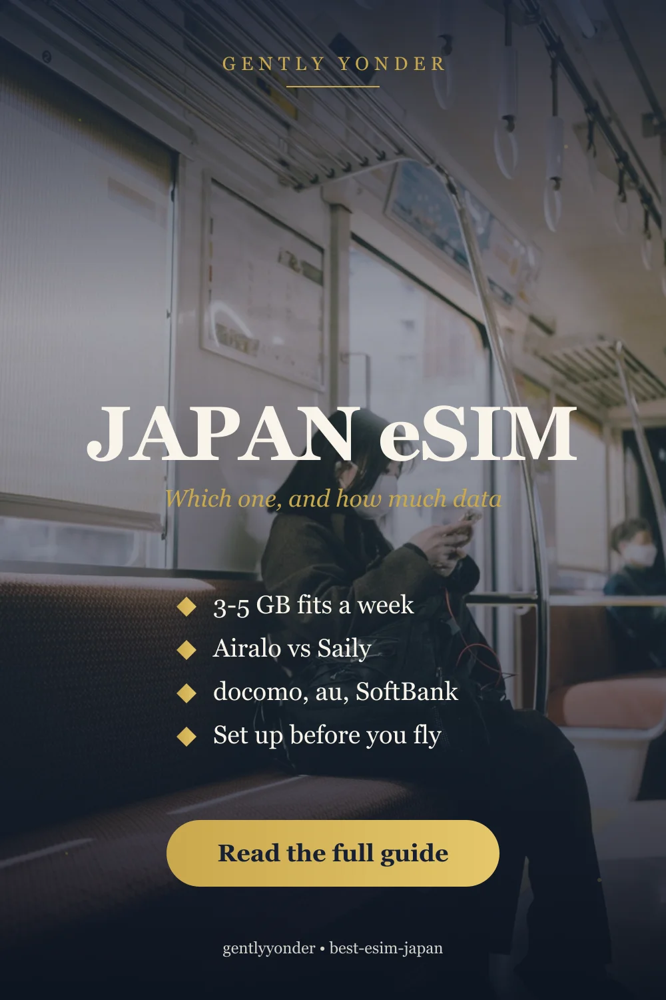
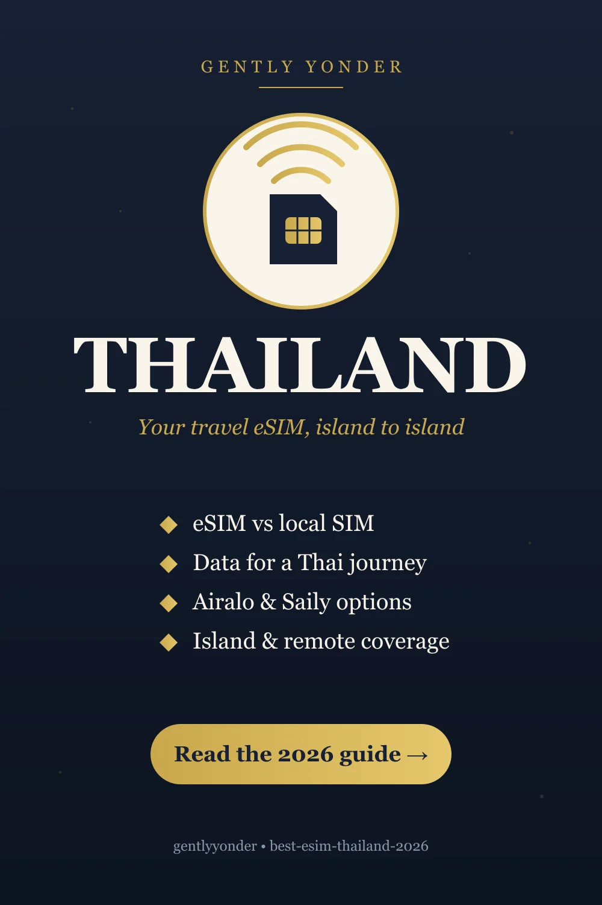
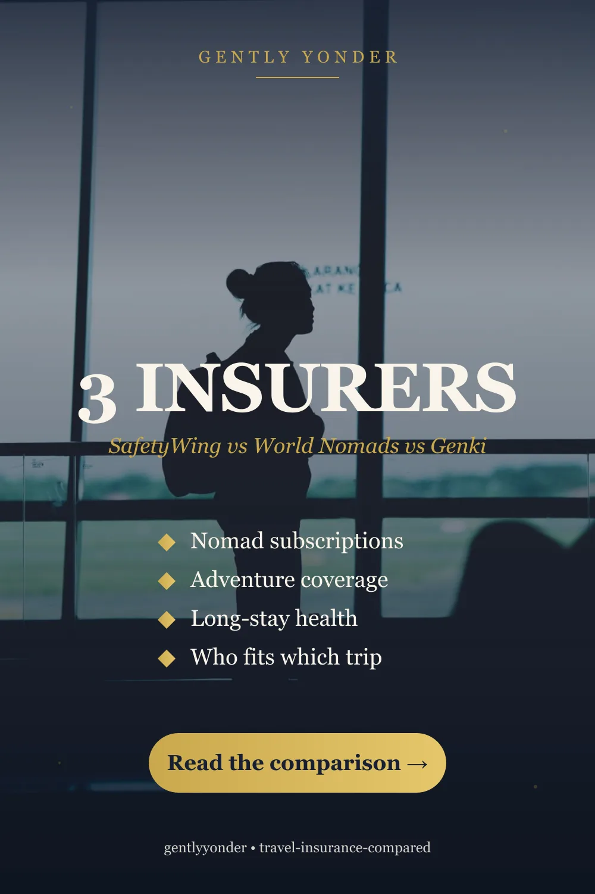
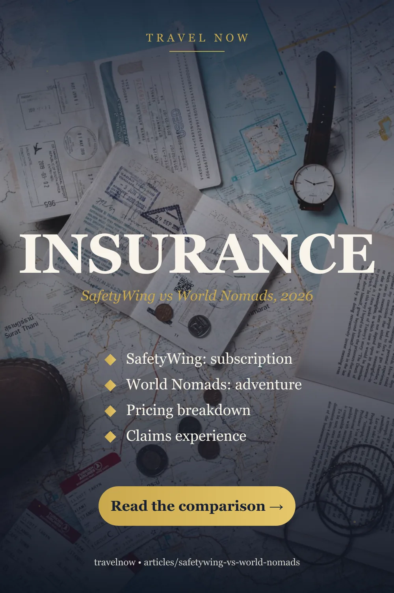
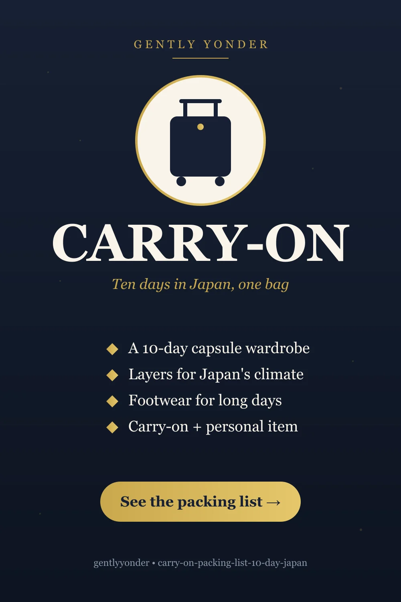
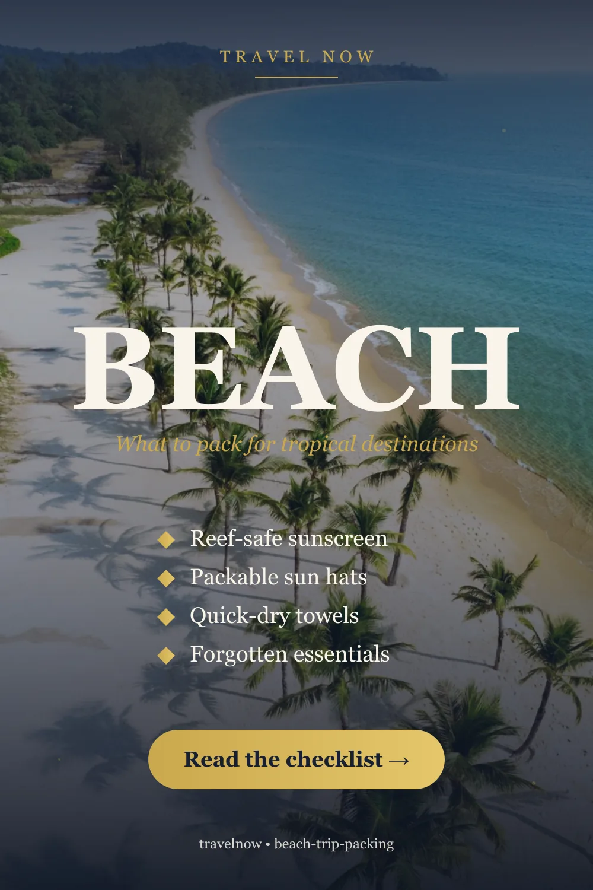
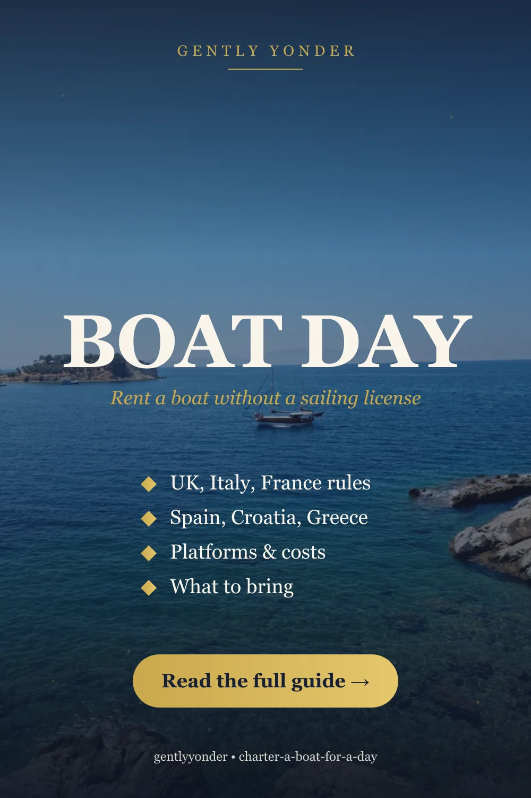

Destinations & Itineraries 20
2026.07.09City LogisticsNarita & Haneda to Central Tokyo
2026.07.09City LogisticsTokyo to Kyoto: Shinkansen, Flight, or Night Bus?
2026.07.09ItineraryOsaka or Kyoto: Which to Base Your Trip In
2026.07.09ItineraryYour First Day in Tokyo: A Calm Arrival Plan
2026.07.08SeasonalBest Time to Visit Vietnam (2026): Region by Region
2026.07.08SeasonalBest Time to Visit Japan (2026): A Season-Honest Guide
2026.07.08ItinerarySeoul in 3 Days: A First-Timer's Unhurried Itinerary
2026.07.08SeasonalBest Time to Visit Australia (2026): Region by Region
2026.07.08ItineraryTokyo in 5 Days: A First-Timer's Unhurried Itinerary
2026.07.08SeasonalKyoto in Autumn 2026: Where the Colors Peak, and When
2026.07.08ItineraryOsaka in 3 Days: Food, Neighborhoods, and Day-One Energy
2026.07.07SeasonalJapan in Autumn 2026: Foliage, Crowds & Planning
2026.07.02ItinerariesThree Slow Days in Kyoto
2026.06.29City LogisticsWhere to Store Luggage in Tokyo

2026.06.20Country ProfileSouth Korea: History, Society & Travel Prep 2026.06.13Country ProfileJapan: History, Society & Travel Prep 2026.06.13Country ProfileVietnam: History, Society & Travel Prep 2026.06.13Country ProfileAustralia: History, Society & Travel Prep 2026.06.12City GuideTokyo: A Layered City Guide 2026.06.12City GuideAsakusa: Tokyo's Oldest DistrictConnectivity & eSIM 10
2026.07.08ConnectivityBest eSIM for South Korea (2026): How I'd Choose
2026.07.07ConnectivityBest Travel eSIM 2026: Ranked, Honestly
2026.07.07ConnectivityBest eSIM for the USA (2026): How I'd Choose
2026.07.04ConnectivityBest eSIM for Japan (2026)

2026.07.01ConnectivityBest eSIM for Europe (2026) 2026.07.01ConnectivityBest eSIM for Thailand (2026)
2026.06.28ConnectivityAiralo vs Holafly vs Saily 2026.06.28ConnectivityBest eSIM for Japan, Korea & Vietnam 2026.06.28ConnectivityPocket WiFi vs eSIM 2026.05.28ConnectivityeSIM Setup for International TravelInsurance & Safety 6
2026.07.07Travel SafetyBest Travel Insurance 2026: Ranked by Traveler Type

2026.07.07Travel SafetyIs Travel Insurance Actually Worth It? 2026.07.07Travel SafetyDo You Need Travel Insurance for Japan? 2026.06.28Travel SafetySafetyWing vs World Nomads
2026.06.28Travel SafetyBest Travel Insurance for Digital Nomads (2026) 2026.06.20Travel SafetyTravel Insurance Compared: SafetyWing vs World Nomads vs GenkiPacking, Airports & Gear 11
2026.07.08Travel PrepYour First International Trip: A Calm Checklist
2026.07.08Flight ComfortJet Lag, Honestly: What Helps, What's Myth
2026.06.29PackingCarry-On Packing List for 10 Days in Japan

2026.06.28Carry-on PrepAirport Security Checklist: 12 Points Before You Fly 2026.06.26Carry-on PrepAirport Security Bags: Carry-On and Personal Item Rules 2026.06.20PackingCapsule Wardrobe for 2-Week Trips 2026.06.11Hotel Stay ComfortHotel Booking Sites Compared 2026.06.08Sun & BeachBeach Trip Packing Checklist
2026.05.28Carry-on PrepCarry-On Packing for Airport Security 2026.05.28Everyday CarryTravel EDC Checklist 2026.05.26Carry-on PrepAirport Security Liquids ChecklistBooking, Rail & Tours 5
2026.07.09Tours & ActivitiesAre Japan's City Sightseeing Passes Worth It?
2026.07.08Japan RailIs the JR Pass Worth It in 2026? The Honest Math
2026.07.07Tours & ActivitiesJapan Tickets That Sell Out: Book Before You Fly
2026.06.28Tours & ActivitiesKlook vs Viator vs GetYourGuide
2026.06.16Coastal TravelCharter a Boat for a Day (No License Required)
